library(targets)
library(tidyverse)
library(ggokabeito) # Farben
library(easystats)
library(gt) # Tabellen
library(ggfittext)
library(scales)
library(visdat)1 Lösung 08
1.1 Aufgaben
Interaktion mit dem LLM
- Wie oft wird (pro Monat) ein AI Transkript angefordert? (Tipp: Suche nach
click_transcript_word.) - Wie oft wird (pro Monat) mit dem LLM interagiert (Tipp:
llm)? - Welcher Anteil der Visits (
id_visit) interagiert mit dem LLM?
Ausgabeformat: Quarto (Bericht) und R-Syntax (Targets-Pipeline).
Hinweise:
- Nutzen Sie Typst als Ausgabeformat.
- Bitte beachten Sie Hinweise zum Programmieren.
1.2 Lösungen
Hier ist eine mögliche Lösung für die Pipeline.
Beachten Sie bitte, dass die Targets-Pipeline-Datei _targets.R heißen sollte und nur die Pipeline-Funktionen enthalten sollte.
Die Pipeline lassen Sie mit tar_make() laufen, hier ist ein Beispiel.
1.3 Pipeline-Output
So kann man die Pipeline starten:
> tar_make(script = "challenge08-solution.R", store = "challenge08")Und so sah die Ausgabe aus:
> tar_make(script = "challenge08-solution.R",
+ store = "mastersolution")
✔ skipped target data_files_list
✔ skipped target one_df
✔ skipped target rm_empty
✔ skipped target clean_col_names
✔ skipped target rm_constants
✔ skipped target repair_dttm
✔ skipped target data_users_only
✔ skipped target d_long
✔ skipped target export_action_types_csv
✔ skipped target export_data_users_only_xlsx
✔ skipped target time_duration
✔ skipped target time_since_last_visit
✔ skipped target d_long_nona
✔ skipped target add_id_col
✔ skipped target numeric_id
✔ skipped target actions_per_visit
✔ skipped target action_types
✔ skipped target time_spent
✔ skipped target count_action_type
✔ skipped target llm_per_visit
✔ skipped target time_minmax
✔ skipped target time_visit_wday
✔ skipped target ai_llm_per_months
✔ skipped target ai_transcript_clicks_per_month
✔ skipped target idvisit_has_llm
✔ skipped pipeline [0.217 seconds]
1.4 Quarto-Report
Der Quarto-Bericht ist im Github-Repo als HTML-Standalone verfügbar. Außerdem an gleicher Stelle als PDF-Datei via Typst.
1.4.1 R-Pakete starten
theme_set(theme_minimal())1.4.2 Daten importieren und inspizieren
1.4.2.1 Targets-Objekte laden
tar_load(action_types, store = "mastersolution")
tar_load(data_users_only, store = "mastersolution")
tar_load(actions_per_visit, store = "mastersolution")
tar_load(time_minmax, store = "mastersolution")
tar_load(time_since_last_visit,store = "mastersolution")
tar_load(numeric_id, store = "mastersolution")
tar_load(time_spent, store = "mastersolution")
tar_load(time_duration, store = "mastersolution")
tar_load(time_visit_wday, store = "mastersolution")
tar_load(ai_transcript_clicks_per_month, store = "mastersolution") # challenge 08
tar_load(llm_per_visit, store = "mastersolution") # challenge 08
tar_load(ai_llm_per_months, store = "mastersolution") # challenge 08
tar_load(idvisit_has_llm, store = "mastersolution") # challenge 081.4.2.2 Dimension
Der Roh-Datensatz verfügt über
- 2351 Zeilen
- 9247 Spalten (Dubletten und Spalten mit Bildern bereits entfernt)
Jede Zeile entspricht einem “Visit”.
1.4.2.3 Erster Blick
data_users_only_head100 <-
data_users_only %>%
select(1:100) %>%
slice_head(n = 100) data_users_only_head100 %>%
visdat::vis_dat()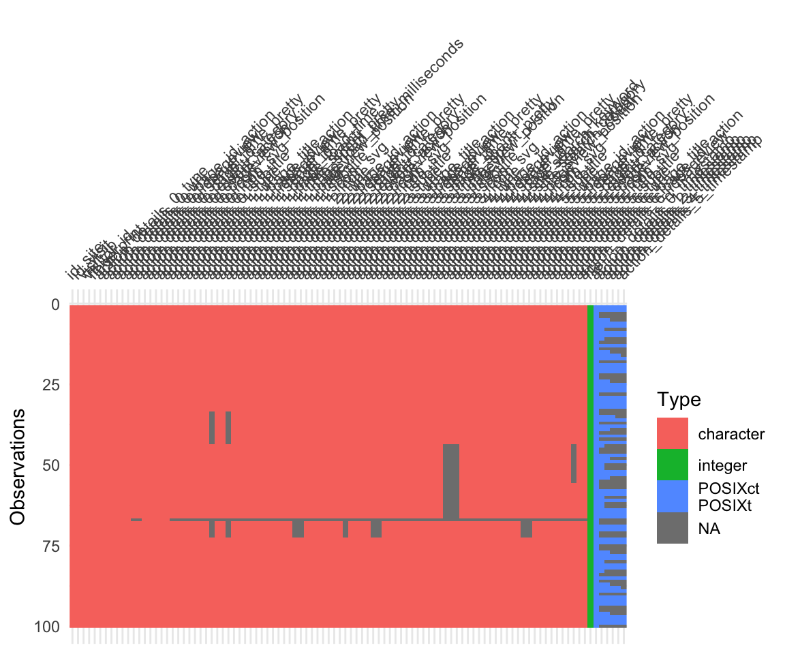
1.4.2.4 Namen (1-100)
data_users_only_head100 %>%
names()
## [1] "file"
## [2] "id_site"
## [3] "id_visit"
## [4] "visit_ip"
## [5] "visitor_id"
## [6] "fingerprint"
## [7] "action_details_0_type"
## [8] "action_details_0_url"
## [9] "action_details_0_page_id_action"
## [10] "action_details_0_idpageview"
## [11] "action_details_0_server_time_pretty"
## [12] "action_details_0_page_id"
## [13] "action_details_0_event_category"
## [14] "action_details_0_event_action"
## [15] "action_details_0_pageview_position"
## [16] "action_details_0_timestamp"
## [17] "action_details_0_icon"
## [18] "action_details_0_icon_svg"
## [19] "action_details_0_title"
## [20] "action_details_0_subtitle"
## [21] "action_details_1_type"
## [22] "action_details_1_url"
## [23] "action_details_1_page_title"
## [24] "action_details_1_page_id_action"
## [25] "action_details_1_idpageview"
## [26] "action_details_1_server_time_pretty"
## [27] "action_details_1_page_id"
## [28] "action_details_1_page_load_time"
## [29] "action_details_1_time_spent"
## [30] "action_details_1_time_spent_pretty"
## [31] "action_details_1_page_load_time_milliseconds"
## [32] "action_details_1_pageview_position"
## [33] "action_details_1_title"
## [34] "action_details_1_subtitle"
## [35] "action_details_1_icon"
## [36] "action_details_1_icon_svg"
## [37] "action_details_1_timestamp"
## [38] "action_details_2_type"
## [39] "action_details_2_url"
## [40] "action_details_2_page_id_action"
## [41] "action_details_2_idpageview"
## [42] "action_details_2_server_time_pretty"
## [43] "action_details_2_page_id"
## [44] "action_details_2_event_category"
## [45] "action_details_2_event_action"
## [46] "action_details_2_pageview_position"
## [47] "action_details_2_timestamp"
## [48] "action_details_2_icon"
## [49] "action_details_2_icon_svg"
## [50] "action_details_2_title"
## [51] "action_details_2_subtitle"
## [52] "action_details_3_type"
## [53] "action_details_3_url"
## [54] "action_details_3_page_title"
## [55] "action_details_3_page_id_action"
## [56] "action_details_3_idpageview"
## [57] "action_details_3_server_time_pretty"
## [58] "action_details_3_page_id"
## [59] "action_details_3_time_spent"
## [60] "action_details_3_time_spent_pretty"
## [61] "action_details_3_pageview_position"
## [62] "action_details_3_title"
## [63] "action_details_3_subtitle"
## [64] "action_details_3_icon"
## [65] "action_details_3_icon_svg"
## [66] "action_details_3_timestamp"
## [67] "action_details_4_type"
## [68] "action_details_4_url"
## [69] "action_details_4_page_id_action"
## [70] "action_details_4_idpageview"
## [71] "action_details_4_server_time_pretty"
## [72] "action_details_4_page_id"
## [73] "action_details_4_site_search_keyword"
## [74] "action_details_4_site_search_category"
## [75] "action_details_4_site_search_count"
## [76] "action_details_4_pageview_position"
## [77] "action_details_4_icon"
## [78] "action_details_4_icon_svg"
## [79] "action_details_4_title"
## [80] "action_details_4_subtitle"
## [81] "action_details_4_timestamp"
## [82] "action_details_5_type"
## [83] "action_details_5_url"
## [84] "action_details_5_page_id_action"
## [85] "action_details_5_idpageview"
## [86] "action_details_5_server_time_pretty"
## [87] "action_details_5_page_id"
## [88] "action_details_5_event_category"
## [89] "action_details_5_event_action"
## [90] "action_details_5_pageview_position"
## [91] "action_details_5_timestamp"
## [92] "action_details_5_icon"
## [93] "action_details_5_icon_svg"
## [94] "action_details_5_title"
## [95] "action_details_5_subtitle"
## [96] "action_details_6_type"
## [97] "action_details_6_url"
## [98] "action_details_6_page_title"
## [99] "action_details_6_page_id_action"
## [100] "action_details_6_idpageview"1.4.2.5 Werte der erst 100 Spalten
data_users_only_head100 %>%
glimpse()
## Rows: 100
## Columns: 100
## $ file <int> 1, 1, 1, 1, 1, 1, 1, 1, 1…
## $ id_site <chr> "1", "1", "1", "1", "1", …
## $ id_visit <chr> "19", "18", "17", "14", "…
## $ visit_ip <chr> "172.30.0.0", "172.30.0.0…
## $ visitor_id <chr> "01357ce636fa78c2", "a0fe…
## $ fingerprint <chr> "9ffcf86ca880ddaa", "4524…
## $ action_details_0_type <chr> "event", "action", "event…
## $ action_details_0_url <chr> "https://hans.th-nuernber…
## $ action_details_0_page_id_action <chr> "17", "2", "17", "192", "…
## $ action_details_0_idpageview <chr> "1YNiVr", "DNNr9n", "Vfj7…
## $ action_details_0_server_time_pretty <chr> "Mar 4, 2024 22:58:30", "…
## $ action_details_0_page_id <chr> "6509", "5632", "5621", "…
## $ action_details_0_event_category <chr> "click_button", "", "clic…
## $ action_details_0_event_action <chr> "Kanäle", "", "Kanäle", "…
## $ action_details_0_pageview_position <chr> "", "1", "", "1", "1", "1…
## $ action_details_0_timestamp <dttm> 2024-03-04 22:58:30, 202…
## $ action_details_0_icon <chr> "plugins/Morpheus/images/…
## $ action_details_0_icon_svg <chr> "plugins/Morpheus/images/…
## $ action_details_0_title <chr> "Event", "HAnS", "Event",…
## $ action_details_0_subtitle <chr> "Category: \"\"click_butt…
## $ action_details_1_type <chr> "action", "event", "", ""…
## $ action_details_1_url <chr> "https://hans.th-nuernber…
## $ action_details_1_page_title <chr> "HAnS", "", "", "", "", "…
## $ action_details_1_page_id_action <chr> "32", "3", "", "", "", ""…
## $ action_details_1_idpageview <chr> "HKiQ62", "DNNr9n", "", "…
## $ action_details_1_server_time_pretty <chr> "Mar 4, 2024 23:16:59", "…
## $ action_details_1_page_id <chr> "6511", "5633", "", "", "…
## $ action_details_1_page_load_time <chr> "0.94s", "", "", "", "", …
## $ action_details_1_time_spent <chr> "21", "", "", "", "", "",…
## $ action_details_1_time_spent_pretty <chr> "21s", "", "", "", "", ""…
## $ action_details_1_page_load_time_milliseconds <chr> "940", "", "", "", "", ""…
## $ action_details_1_pageview_position <chr> "1", "1", "", "", "2", "2…
## $ action_details_1_title <chr> "HAnS", "Event", "", "", …
## $ action_details_1_subtitle <chr> "https://hans.th-nuernber…
## $ action_details_1_icon <chr> "", "plugins/Morpheus/ima…
## $ action_details_1_icon_svg <chr> "plugins/Morpheus/images/…
## $ action_details_1_timestamp <dttm> 2024-03-04 23:16:59, 202…
## $ action_details_2_type <chr> "event", "action", "", ""…
## $ action_details_2_url <chr> "https://hans.th-nuernber…
## $ action_details_2_page_id_action <chr> "33", "147", "", "", "147…
## $ action_details_2_idpageview <chr> "HKiQ62", "1wrpnl", "", "…
## $ action_details_2_server_time_pretty <chr> "Mar 4, 2024 23:17:20", "…
## $ action_details_2_page_id <chr> "6512", "5634", "", "", "…
## $ action_details_2_event_category <chr> "click_channelcard", "", …
## $ action_details_2_event_action <chr> "ZELLKU", "", "", "", "",…
## $ action_details_2_pageview_position <chr> "1", "2", "", "", "2", "2…
## $ action_details_2_timestamp <dttm> 2024-03-04 23:17:20, 202…
## $ action_details_2_icon <chr> "plugins/Morpheus/images/…
## $ action_details_2_icon_svg <chr> "plugins/Morpheus/images/…
## $ action_details_2_title <chr> "Event", "HAnS", "", "", …
## $ action_details_2_subtitle <chr> "Category: \"\"click_chan…
## $ action_details_3_type <chr> "action", "search", "", "…
## $ action_details_3_url <chr> "https://hans.th-nuernber…
## $ action_details_3_page_title <chr> "HAnS", "", "", "", "", "…
## $ action_details_3_page_id_action <chr> "36", "", "", "", "", "95…
## $ action_details_3_idpageview <chr> "E8FkLA", "1wrpnl", "", "…
## $ action_details_3_server_time_pretty <chr> "Mar 4, 2024 23:17:20", "…
## $ action_details_3_page_id <chr> "6513", "5635", "", "", "…
## $ action_details_3_time_spent <chr> "10", "", "", "", "", "11…
## $ action_details_3_time_spent_pretty <chr> "10s", "", "", "", "", "1…
## $ action_details_3_pageview_position <chr> "2", "2", "", "", "", "4"…
## $ action_details_3_title <chr> "HAnS", "Site Search", ""…
## $ action_details_3_subtitle <chr> "https://hans.th-nuernber…
## $ action_details_3_icon <chr> "", "plugins/Morpheus/ima…
## $ action_details_3_icon_svg <chr> "plugins/Morpheus/images/…
## $ action_details_3_timestamp <dttm> 2024-03-04 23:17:20, 202…
## $ action_details_4_type <chr> "search", "event", "", ""…
## $ action_details_4_url <chr> "", "https://hans.th-nuer…
## $ action_details_4_page_id_action <chr> "", "246", "", "", "", "1…
## $ action_details_4_idpageview <chr> "E8FkLA", "1wrpnl", "", "…
## $ action_details_4_server_time_pretty <chr> "Mar 4, 2024 23:17:20", "…
## $ action_details_4_page_id <chr> "6514", "5637", "", "", "…
## $ action_details_4_site_search_keyword <chr> "ZELLKU", "", "", "", "",…
## $ action_details_4_site_search_category <chr> "", "", "", "", "", "", "…
## $ action_details_4_site_search_count <chr> "0", "", "", "", "", "", …
## $ action_details_4_pageview_position <chr> "2", "3", "", "", "", "5"…
## $ action_details_4_icon <chr> "plugins/Morpheus/images/…
## $ action_details_4_icon_svg <chr> "plugins/Morpheus/images/…
## $ action_details_4_title <chr> "Site Search", "Event", "…
## $ action_details_4_subtitle <chr> "ZELLKU", "Category: \"\"…
## $ action_details_4_timestamp <dttm> 2024-03-04 23:17:20, 202…
## $ action_details_5_type <chr> "event", "action", "", ""…
## $ action_details_5_url <chr> "https://hans.th-nuernber…
## $ action_details_5_page_id_action <chr> "38", "95", "", "", "", "…
## $ action_details_5_idpageview <chr> "E8FkLA", "wZEbOS", "", "…
## $ action_details_5_server_time_pretty <chr> "Mar 4, 2024 23:17:30", "…
## $ action_details_5_page_id <chr> "6515", "5638", "", "", "…
## $ action_details_5_event_category <chr> "click_videocard", "", ""…
## $ action_details_5_event_action <chr> "2-ELISA", "", "", "", ""…
## $ action_details_5_pageview_position <chr> "3", "4", "", "", "", "5"…
## $ action_details_5_timestamp <dttm> 2024-03-04 23:17:30, 202…
## $ action_details_5_icon <chr> "plugins/Morpheus/images/…
## $ action_details_5_icon_svg <chr> "plugins/Morpheus/images/…
## $ action_details_5_title <chr> "Event", "HAnS", "", "", …
## $ action_details_5_subtitle <chr> "Category: \"\"click_vide…
## $ action_details_6_type <chr> "action", "event", "", ""…
## $ action_details_6_url <chr> "https://hans.th-nuernber…
## $ action_details_6_page_title <chr> "HAnS", "", "", "", "", "…
## $ action_details_6_page_id_action <chr> "274", "247", "", "", "",…
## $ action_details_6_idpageview <chr> "DXTmIN", "wZEbOS", "", "…1.4.2.6 Datensatz im Lang-Format, Zeilen 1-100
numeric_id %>%
slice(1:100) |>
gt()| id_visit | name | value | action_count |
|---|---|---|---|
| 19 | action_details_0_type | event | 0 |
| 19 | action_details_0_url | https://hans.th-nuernberg.de/?evalId=none&role=developer | 0 |
| 19 | action_details_0_page_id_action | 17 | 0 |
| 19 | action_details_0_idpageview | 1YNiVr | 0 |
| 19 | action_details_0_server_time_pretty | Mar 4, 2024 22:58:30 | 0 |
| 19 | action_details_0_page_id | 6509 | 0 |
| 19 | action_details_0_event_category | click_button | 0 |
| 19 | action_details_0_event_action | Kanäle | 0 |
| 19 | action_details_0_timestamp | 2024-03-04 22:58:30 | 0 |
| 19 | action_details_0_icon | plugins/Morpheus/images/event.png | 0 |
| 19 | action_details_0_icon_svg | plugins/Morpheus/images/event.svg | 0 |
| 19 | action_details_0_title | Event | 0 |
| 19 | action_details_0_subtitle | Category: ""click_button', Action: ""Kanäle"" | 0 |
| 19 | action_details_1_type | action | 1 |
| 19 | action_details_1_url | https://hans.th-nuernberg.de/channels?evalId=none&role=developer | 1 |
| 19 | action_details_1_page_title | HAnS | 1 |
| 19 | action_details_1_page_id_action | 32 | 1 |
| 19 | action_details_1_idpageview | HKiQ62 | 1 |
| 19 | action_details_1_server_time_pretty | Mar 4, 2024 23:16:59 | 1 |
| 19 | action_details_1_page_id | 6511 | 1 |
| 19 | action_details_1_page_load_time | 0.94s | 1 |
| 19 | action_details_1_time_spent | 21 | 1 |
| 19 | action_details_1_time_spent_pretty | 21s | 1 |
| 19 | action_details_1_page_load_time_milliseconds | 940 | 1 |
| 19 | action_details_1_pageview_position | 1 | 1 |
| 19 | action_details_1_title | HAnS | 1 |
| 19 | action_details_1_subtitle | https://hans.th-nuernberg.de/channels?evalId=none&role=developer | 1 |
| 19 | action_details_1_icon_svg | plugins/Morpheus/images/action.svg | 1 |
| 19 | action_details_1_timestamp | 2024-03-04 23:16:59 | 1 |
| 19 | action_details_2_type | event | 2 |
| 19 | action_details_2_url | https://hans.th-nuernberg.de/channels?evalId=none&role=developer | 2 |
| 19 | action_details_2_page_id_action | 33 | 2 |
| 19 | action_details_2_idpageview | HKiQ62 | 2 |
| 19 | action_details_2_server_time_pretty | Mar 4, 2024 23:17:20 | 2 |
| 19 | action_details_2_page_id | 6512 | 2 |
| 19 | action_details_2_event_category | click_channelcard | 2 |
| 19 | action_details_2_event_action | ZELLKU | 2 |
| 19 | action_details_2_pageview_position | 1 | 2 |
| 19 | action_details_2_timestamp | 2024-03-04 23:17:20 | 2 |
| 19 | action_details_2_icon | plugins/Morpheus/images/event.png | 2 |
| 19 | action_details_2_icon_svg | plugins/Morpheus/images/event.svg | 2 |
| 19 | action_details_2_title | Event | 2 |
| 19 | action_details_2_subtitle | Category: ""click_channelcard', Action: ""ZELLKU"" | 2 |
| 19 | action_details_3_type | action | 3 |
| 19 | action_details_3_url | https://hans.th-nuernberg.de/search-results?evalId=none&role=developer | 3 |
| 19 | action_details_3_page_title | HAnS | 3 |
| 19 | action_details_3_page_id_action | 36 | 3 |
| 19 | action_details_3_idpageview | E8FkLA | 3 |
| 19 | action_details_3_server_time_pretty | Mar 4, 2024 23:17:20 | 3 |
| 19 | action_details_3_page_id | 6513 | 3 |
| 19 | action_details_3_time_spent | 10 | 3 |
| 19 | action_details_3_time_spent_pretty | 10s | 3 |
| 19 | action_details_3_pageview_position | 2 | 3 |
| 19 | action_details_3_title | HAnS | 3 |
| 19 | action_details_3_subtitle | https://hans.th-nuernberg.de/search-results?evalId=none&role=developer | 3 |
| 19 | action_details_3_icon_svg | plugins/Morpheus/images/action.svg | 3 |
| 19 | action_details_3_timestamp | 2024-03-04 23:17:20 | 3 |
| 19 | action_details_4_type | search | 4 |
| 19 | action_details_4_idpageview | E8FkLA | 4 |
| 19 | action_details_4_server_time_pretty | Mar 4, 2024 23:17:20 | 4 |
| 19 | action_details_4_page_id | 6514 | 4 |
| 19 | action_details_4_site_search_keyword | ZELLKU | 4 |
| 19 | action_details_4_site_search_count | 0 | 4 |
| 19 | action_details_4_pageview_position | 2 | 4 |
| 19 | action_details_4_icon | plugins/Morpheus/images/search.png | 4 |
| 19 | action_details_4_icon_svg | plugins/Morpheus/images/search.svg | 4 |
| 19 | action_details_4_title | Site Search | 4 |
| 19 | action_details_4_subtitle | ZELLKU | 4 |
| 19 | action_details_4_timestamp | 2024-03-04 23:17:20 | 4 |
| 19 | action_details_5_type | event | 5 |
| 19 | action_details_5_url | https://hans.th-nuernberg.de/search-results?evalId=none&role=developer | 5 |
| 19 | action_details_5_page_id_action | 38 | 5 |
| 19 | action_details_5_idpageview | E8FkLA | 5 |
| 19 | action_details_5_server_time_pretty | Mar 4, 2024 23:17:30 | 5 |
| 19 | action_details_5_page_id | 6515 | 5 |
| 19 | action_details_5_event_category | click_videocard | 5 |
| 19 | action_details_5_event_action | 2-ELISA | 5 |
| 19 | action_details_5_pageview_position | 3 | 5 |
| 19 | action_details_5_timestamp | 2024-03-04 23:17:30 | 5 |
| 19 | action_details_5_icon | plugins/Morpheus/images/event.png | 5 |
| 19 | action_details_5_icon_svg | plugins/Morpheus/images/event.svg | 5 |
| 19 | action_details_5_title | Event | 5 |
| 19 | action_details_5_subtitle | Category: ""click_videocard', Action: ""2-ELISA"" | 5 |
| 19 | action_details_6_type | action | 6 |
| 19 | action_details_6_url | https://hans.th-nuernberg.de/video-player?uuid=762ed229-e6f4-415d-9f5d-f4279fbeb7d0&evalId=none&role=developer | 6 |
| 19 | action_details_6_page_title | HAnS | 6 |
| 19 | action_details_6_page_id_action | 274 | 6 |
| 19 | action_details_6_idpageview | DXTmIN | 6 |
| 19 | action_details_6_server_time_pretty | Mar 4, 2024 23:17:30 | 6 |
| 19 | action_details_6_page_id | 6516 | 6 |
| 19 | action_details_6_time_spent | 14 | 6 |
| 19 | action_details_6_time_spent_pretty | 14s | 6 |
| 19 | action_details_6_pageview_position | 4 | 6 |
| 19 | action_details_6_title | HAnS | 6 |
| 19 | action_details_6_subtitle | https://hans.th-nuernberg.de/video-player?uuid=762ed229-e6f4-415d-9f5d-f4279fbeb7d0&evalId=none&role=developer | 6 |
| 19 | action_details_6_icon_svg | plugins/Morpheus/images/action.svg | 6 |
| 19 | action_details_6_timestamp | 2024-03-04 23:17:30 | 6 |
| 19 | action_details_7_type | event | 7 |
| 19 | action_details_7_url | https://hans.th-nuernberg.de/video-player?uuid=762ed229-e6f4-415d-9f5d-f4279fbeb7d0&evalId=none&role=developer | 7 |
| 19 | action_details_7_page_id_action | 275 | 7 |
1.4.3 Zeitraum
1.4.3.1 Beginn/Ende der Daten
time_minmax |>
summarise(time_min = min(time_min),
time_max = max(time_max)) |>
gt()| time_min | time_max |
|---|---|
| NA | NA |
1.4.3.2 Days since last visit
time_since_last_visit <-
time_since_last_visit |>
mutate(days_since_last_visit = as.numeric(days_since_last_visit))
time_since_last_visit |>
datawizard::describe_distribution(days_since_last_visit) |>
knitr::kable()| Variable | Mean | SD | IQR | Min | Max | Skewness | Kurtosis | n | n_Missing |
|---|---|---|---|---|---|---|---|---|---|
| days_since_last_visit | 6.726293 | 225.8745 | 0 | 0 | 10806 | 47.2408 | 2256.477 | 2320 | 31 |
time_since_last_visit |>
ggplot(aes(x = days_since_last_visit)) +
geom_density()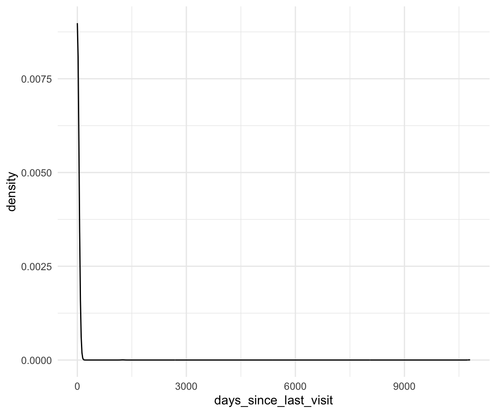
1.4.4 Anzahl Visits
glimpse(action_types)
## Rows: 2,585,360
## Columns: 4
## $ id_visit <chr> "19", "19", "19", "19", "19", "19", "19", "19", "19", "19…
## $ type <chr> "type", "url", "page", "idpageview", "server", "page", "e…
## $ value <chr> "event", "https://hans.th-nuernberg.de/?evalId=none&role=…
## $ action_count <int> 0, 0, 0, 0, 0, 0, 0, 0, 0, 0, 0, 0, 0, 1, 1, 1, 1, 1, 1, …action_types$id_visit |> unique() |> length()
## [1] 17711.4.5 Anzahl der Aktionen pro Visit
action_count fasst die Nummer der Aktion innerhalb eines bestimmten Visits. type gibt den Typ der protokollierten Aktion an, z.B. ob es ein Timestamp war.
1.4.5.1 Mit allen Daten (den 499er-Daten)
actions_per_visit |>
describe_distribution(nr_max) |>
gt() |>
fmt_number(columns = where(is.numeric),
decimals = 2)| Variable | Mean | SD | IQR | Min | Max | Skewness | Kurtosis | n | n_Missing |
|---|---|---|---|---|---|---|---|---|---|
| nr_max | 85.71 | 163.16 | 65.00 | 0.00 | 499.00 | 1.89 | 1.96 | 1,771.00 | 0.00 |
nr_max gibt den Maximalwert von nr zurück, sagt also, wie viele Aktionen maximal von einem Visitor ausgeführt wurden.
Betrachtet man die Anzahl der Aktionen pro Visitor näher, so fällt auf, dass der Maximalwert (499) sehr häufig vorkommt:
actions_per_visit |>
count(nr_max) |>
ggplot(aes(x = nr_max, y = n)) +
geom_col()
Hier noch in einer anderen Darstellung:
actions_per_visit |>
count(nr_max) |>
ggplot(aes(x = nr_max, y = n)) +
geom_point()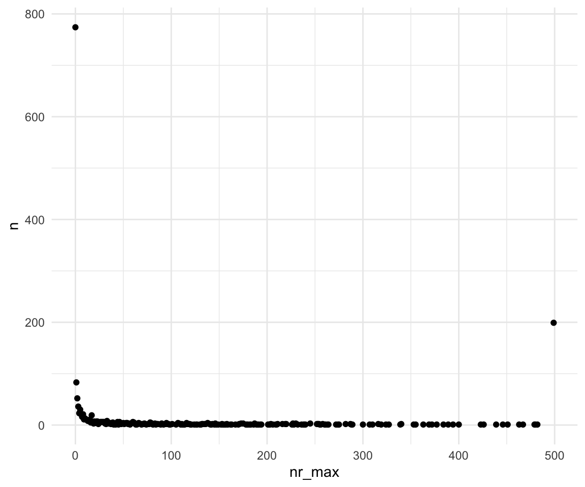
Der Maximalwert ist einfach auffällig häufig:
actions_per_visit |>
count(nr_max == 499) |>
gt()| nr_max == 499 | n |
|---|---|
| FALSE | 1572 |
| TRUE | 199 |
Es erscheint plausibel, dass der Maximalwert alle “gekappten” (zensierten, abgeschnittenen) Werte fasst, also viele Werte, die eigentlich größer wären (aber dann zensiert wurden).
1.4.5.2 Nur Visitors, für die weniger als 500 Aktionen protokolliert sind
actions_per_visit2 <-
actions_per_visit |>
filter(nr_max != 499)
actions_per_visit2 |>
describe_distribution(nr_max) |>
gt() |>
fmt_number(columns = where(is.numeric),
decimals = 2)| Variable | Mean | SD | IQR | Min | Max | Skewness | Kurtosis | n | n_Missing |
|---|---|---|---|---|---|---|---|---|---|
| nr_max | 33.40 | 74.96 | 22.00 | 0.00 | 482.00 | 3.11 | 10.55 | 1,572.00 | 0.00 |
1.4.6 Verteilung
1.4.6.1 Mit den 499er-Daten
actions_per_visit_avg = mean(actions_per_visit$nr_max)
actions_per_visit_sd = sd(actions_per_visit$nr_max)
actions_per_visit |>
ggplot() +
geom_histogram(aes(x = nr_max)) +
labs(x = "Anzahl von Aktionen pro Visit",
y = "n",
caption = "Der vertikale Strich zeigt den Mittelwert; der horizontale die SD") +
theme_minimal() +
geom_vline(xintercept = actions_per_visit_avg,
color = palette_okabe_ito()[1]) +
geom_segment(x = actions_per_visit_avg-actions_per_visit_sd,
y = 0,
xend = actions_per_visit_avg + actions_per_visit_sd,
yend = 0,
color = palette_okabe_ito()[2],
size = 2) +
annotate("label", x = actions_per_visit_avg, y = 1500, label = "MW") +
annotate("label", x = actions_per_visit_avg + actions_per_visit_sd, y = 0, label = "SD")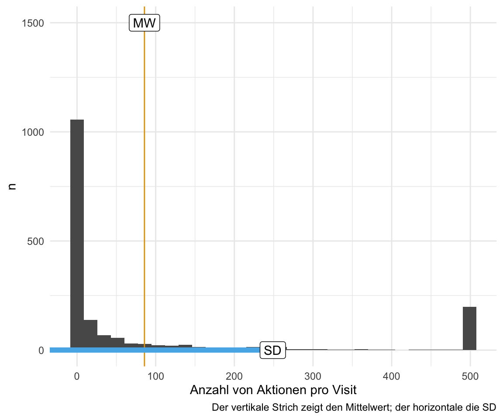
#geom_label(aes(x = actions_per_visit_avg), y = 1, label = "Mean")- Mittelwert der Aktionen pro Visit: 85.71.
- SD der Aktionen pro Visit: 163.16.
1.4.6.2 Ohne 499er-Daten
actions_per_visit_avg2 = mean(actions_per_visit2$nr_max)
actions_per_visit_sd2 = sd(actions_per_visit2$nr_max)
actions_per_visit2 |>
ggplot() +
geom_histogram(aes(x = nr_max)) +
labs(x = "Anzahl von Aktionen pro Visit",
y = "n",
title = "Verteilung der User-Aktionen pro Visit",
caption = "Der vertikale Strich zeigt den Mittelwert; der horizontale die SD") +
theme_minimal() +
geom_vline(xintercept = actions_per_visit_avg2,
color = palette_okabe_ito()[1]) +
geom_segment(x = actions_per_visit_avg-actions_per_visit_sd2,
y = 0,
xend = actions_per_visit_avg2 + actions_per_visit_sd2,
yend = 0,
color = palette_okabe_ito()[2],
size = 2) +
annotate("label", x = actions_per_visit_avg2, y = 1500, label = "MW", vjust = "top") +
annotate("label", x = actions_per_visit_avg2 + actions_per_visit_sd2, y = 0, label = "SD", vjust = "bottom")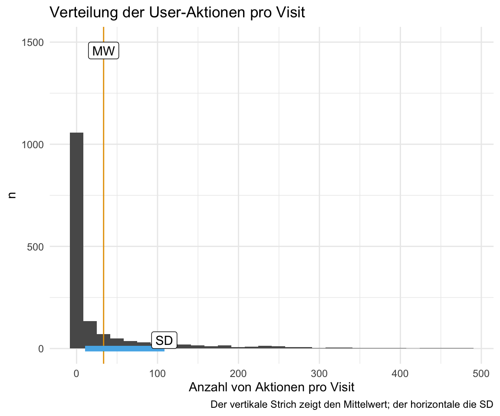
#geom_label(aes(x = actions_per_visit_avg), y = 1, label = "Mean")- Mittelwert der Aktionen pro Visit: 33.4.
- SD der Aktionen pro Visit: 74.96.
1.5 Wieviel Zeit verbringen die Nutzer pro Visit?
Die Visit-Zeit wurde auf 600 Min. trunkiert/begrenzt.
time_spent <-
time_spent |>
mutate(t_min = as.numeric(time_diff, units = "mins")) |>
filter(t_min < 600)1.5.1 Verweildauer-Statistiken in Sekunden
time_spent |>
summarise(
mean_time_diff = round(mean(time_diff), 2),
sd_time_diff = sd(time_diff),
min_time_diff = min(time_diff),
max_time_diff = max(time_diff)
) |>
summarise(
mean_time_diff_avg = mean(mean_time_diff),
sd_time_diff_avg = mean(sd_time_diff, na.rm = TRUE),
min_time_diff_avg = mean(min_time_diff),
max_time_diff_avg = mean(max_time_diff)
) |>
gt() |>
fmt_number(columns = everything(),
decimals = 2)| mean_time_diff_avg | sd_time_diff_avg | min_time_diff_avg | max_time_diff_avg |
|---|---|---|---|
| 812.839590443686 | 0.00 | 812.839590443686 | 812.839590443686 |
time_duration |>
summarise(duration_sec_avg = mean(visit_duration_sec, na.rm = TRUE)) |>
mutate(duration_min_avg = duration_sec_avg / 60)1.5.2 Verweildauer-Statistiken in Minuten
time_spent |>
summarise(
mean_t_min = mean(t_min),
sd_t_min = sd(t_min),
min_t_min = min(t_min),
max_t_min = max(t_min)
) |>
summarise(
mean_t_min_avg = mean(mean_t_min),
sd_t_min_avg = mean(sd_t_min, na.rm = TRUE),
min_t_min_avg = mean(min_t_min),
max_t_min_avg = mean(max_t_min)
) |>
gt() |>
fmt_number(columns = everything(),
decimals = 2)| mean_t_min_avg | sd_t_min_avg | min_t_min_avg | max_t_min_avg |
|---|---|---|---|
| 13.55 | 0.00 | 13.55 | 13.55 |
1.5.3 Visualisierung der Verweildauer
1.5.3.1 bins=20
time_spent |>
ggplot(aes(x = t_min)) +
geom_histogram() +
scale_x_time() +
theme_minimal() +
labs(y = "n",
x = "Verweildauer in HaNS pro Visit in Minuten")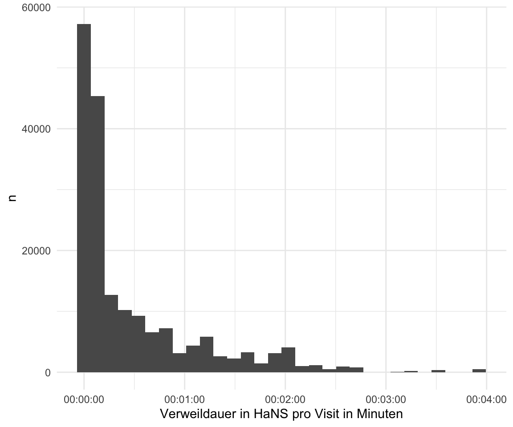
1.5.3.2 bins=100
time_spent |>
ggplot(aes(x = t_min)) +
geom_histogram(binwidth = 5) +
theme_minimal() +
labs(y = "n",
x = "Verweildauer in Minuten",
title = "Verweildauer in HaNS pro Visit",
caption = "binwidth = 5 Min.")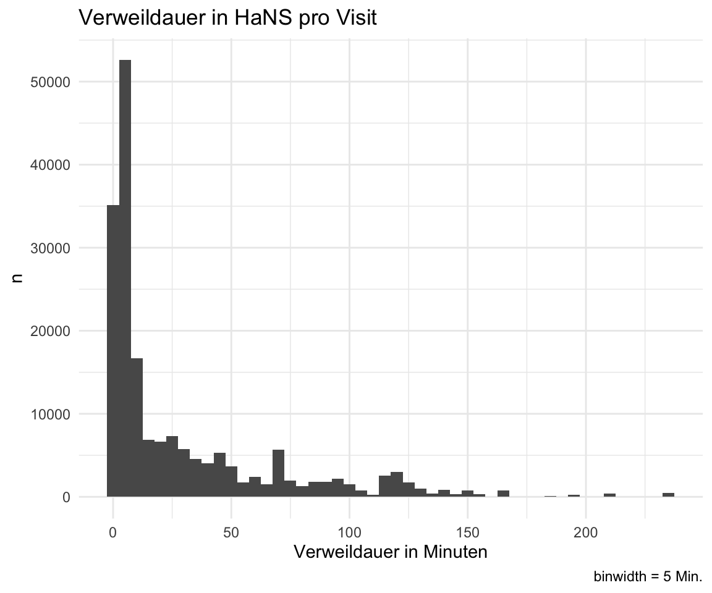
1.5.3.3 Zeitdauer begrenzt auf 1-120 Min.
time_spent2 <-
time_spent |>
filter(t_min > 1, t_min < 120)
time_spent2 |>
ggplot(aes(x = t_min)) +
geom_histogram(binwidth = 10) +
theme_minimal() +
labs(y = "n",
x = "Verweildauer in HaNS pro Visit in Minuten",
title = "Verweildauer begrenzt auf 1-120 Minuten",
caption = "bindwidth = 10 Min.")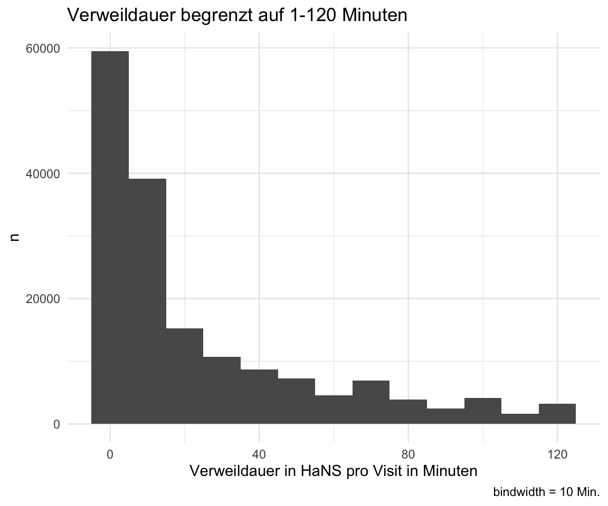
1.6 An welchen Tagen und zu welcher Zeit kommen die User zu HaNS?
1.6.1 Setup
# Define a vector with the names of the days of the week
# Note: Adjust the start of the week (Sunday or Monday) as per your requirement
days_of_week <- c("Monday", "Tuesday", "Wednesday", "Thursday", "Friday", "Saturday", "Sunday")
# Replace numbers with day names
time_visit_wday$dow2 <- factor(days_of_week[time_visit_wday$dow],
levels = days_of_week)1.6.2 HaNS-Login nach Uhrzeit
time_visit_wday |>
as_tibble() |>
count(hour) |>
mutate(prop = n/sum(n)) |>
ggplot(aes(x = hour, y = prop)) +
geom_col() +
theme_minimal() +
labs(
title = "HaNS-Nutzer sind keine Frühaufsteher",
x = "Uhrzeit",
y = "Anteil"
)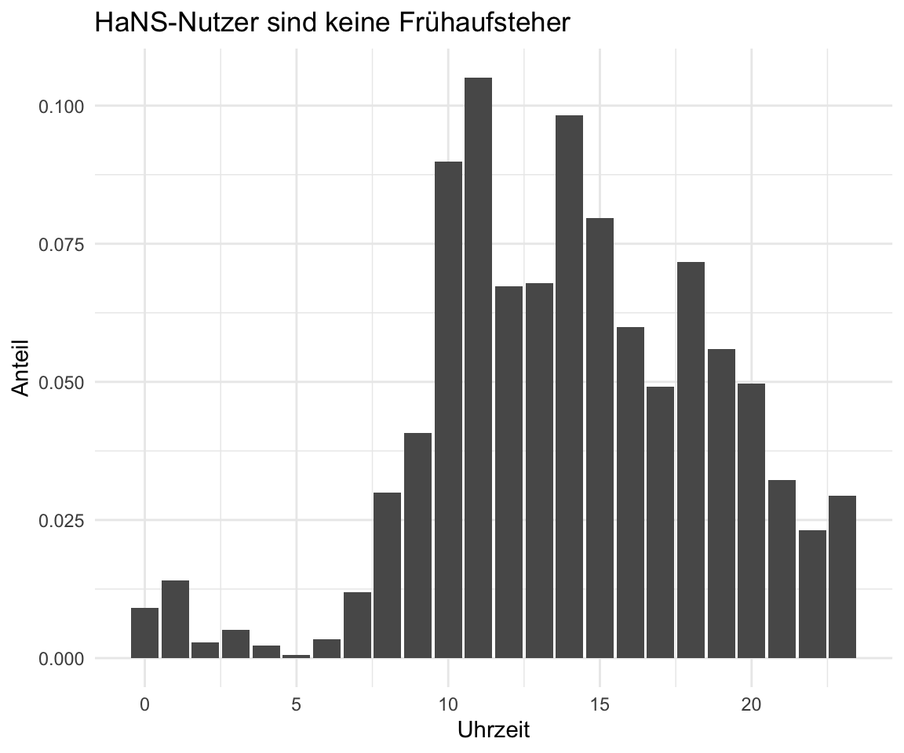
# coord_polar()time_visit_wday |>
as_tibble() |>
count(hour) |>
mutate(prop = n/sum(n)) |>
ggplot(aes(x = hour, y = prop)) +
geom_col() +
theme_minimal() +
coord_polar()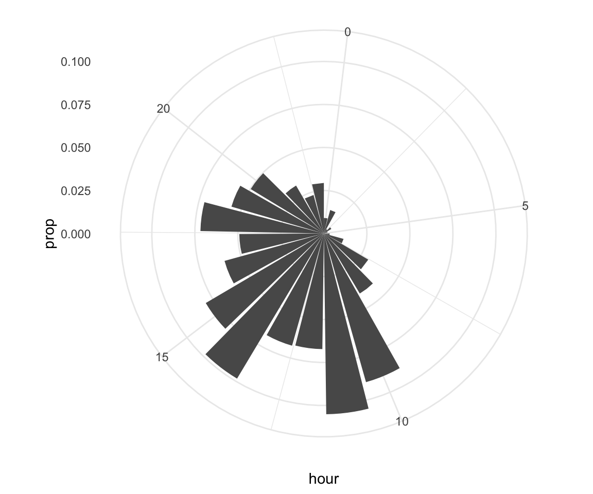
1.6.3 Verteilung der HaNS-Besuche nach Wochentagen
time_visit_wday |>
as_tibble() |>
count(dow2) |>
mutate(prop = n/sum(n)) |>
ggplot(aes(x = dow2, y = prop)) +
geom_col() +
theme_minimal() +
labs(title = "Verteilung der HaNS-Logins nach Wochentagen",
x = "Wochentag",
y = "Anteil")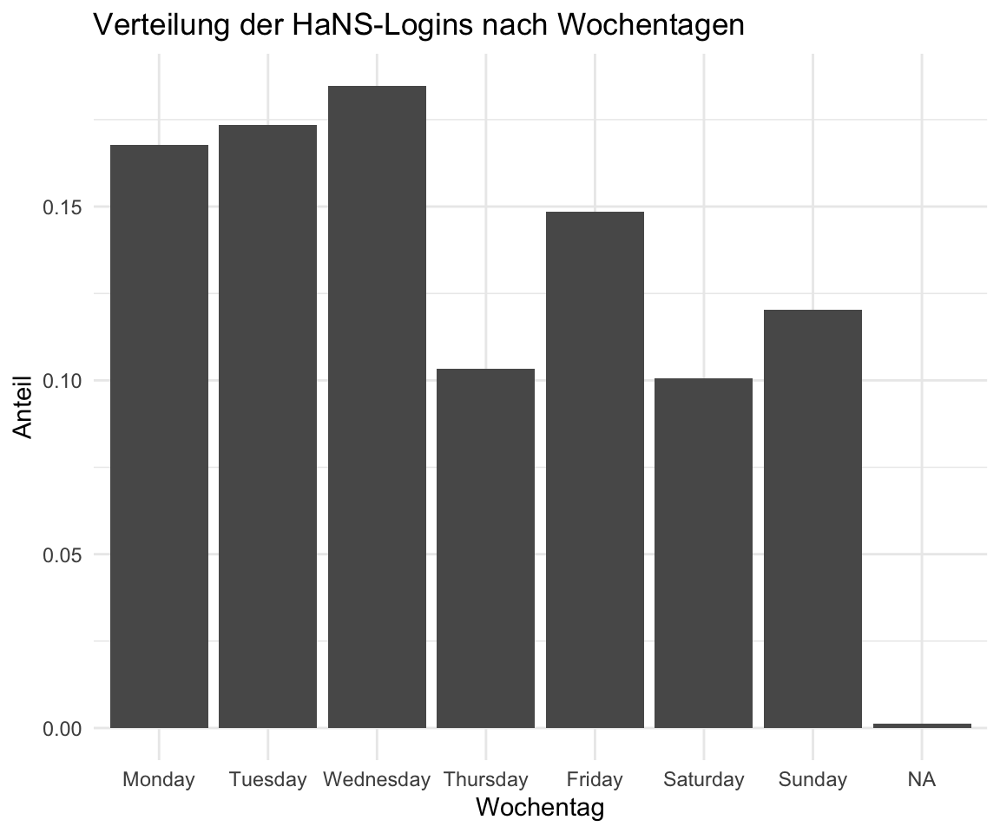
# coord_polar()time_visit_wday |>
as_tibble() |>
count(dow2) |>
mutate(prop = n/sum(n)) |>
ggplot(aes(x = dow2, y = prop)) +
geom_col() +
theme_minimal() +
labs(title = "Verteilung der HaNS-Logins nach Wochentagen",
x = "Wochentag",
y = "Anteil") +
coord_polar()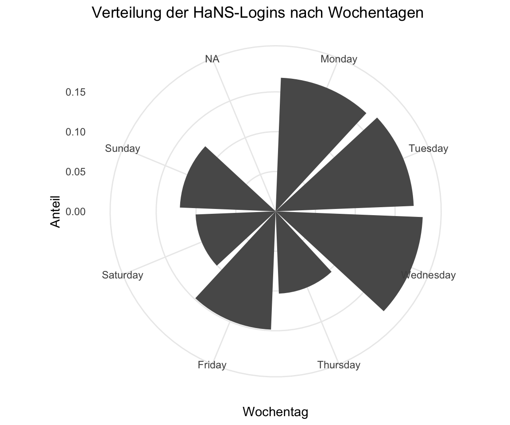
1.6.3.1 HaNS-Login nach Wochentagen Uhrzeit
time_visit_wday |>
as_tibble() |>
count(dow2, hour) |>
group_by(dow2) |>
mutate(prop = n/sum(n)) |>
ggplot(aes(x = hour, y = prop)) +
geom_col() +
facet_wrap(~ dow2) +
theme_minimal() +
labs(title = "Verteilung der HaNS-Logins nach Wochentagen und Uhrzeiten",
x = "Wochentag",
y = "Anteil")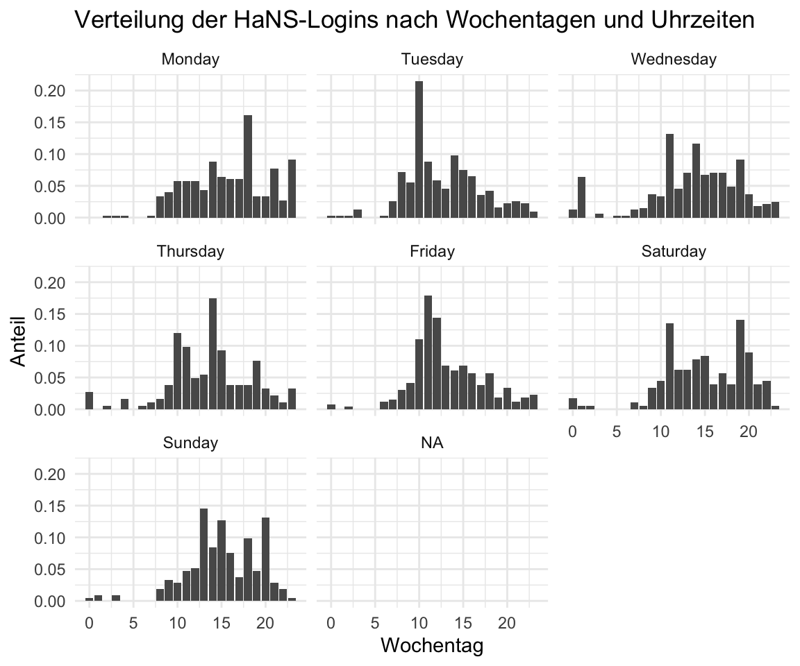
# coord_polar()time_visit_wday |>
as_tibble() |>
count(dow2, hour) |>
group_by(dow2) |>
mutate(prop = n/sum(n)) |>
ggplot(aes(x = hour, y = prop)) +
geom_col() +
facet_wrap(~ dow2) +
theme_minimal() +
labs(title = "Verteilung der HaNS-Logins nach Wochentagen und Uhrzeiten",
x = "Wochentag",
y = "Anteil") +
coord_polar()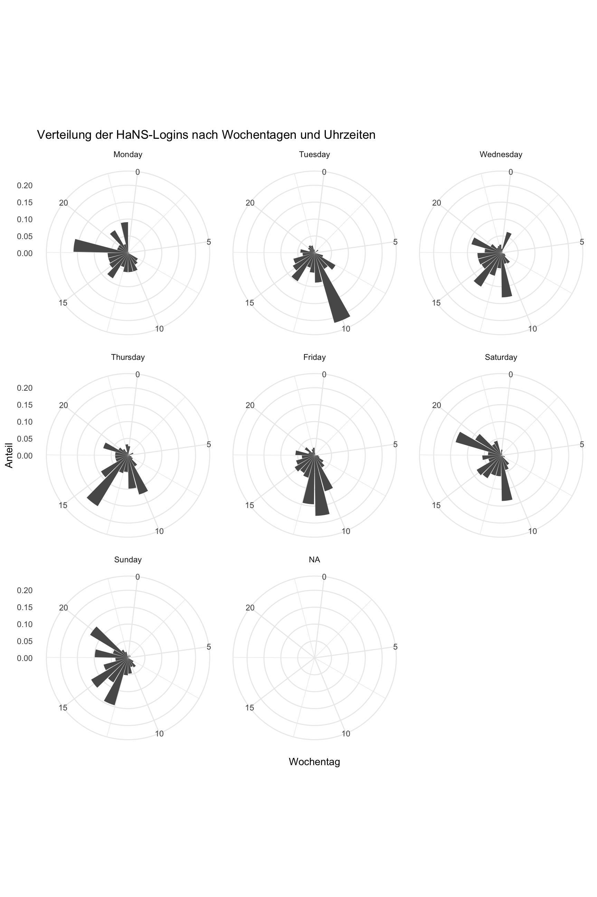
1.6.4 Anzahl der Visits nach Datum (Tagen) und Uhrzeit (bin2d)
time2 <-
time_visit_wday |>
ungroup() |>
mutate(date = as.Date(date_time))
time2 |>
ggplot(aes(x = date, y = hour)) +
geom_bin2d(binwidth = c(1, 1)) + # (1 day, 1 hour)
scale_x_date(date_breaks = "1 month") +
theme(legend.position = "bottom") +
scale_fill_viridis_c() +
labs(caption = "Each x-bin maps to one week")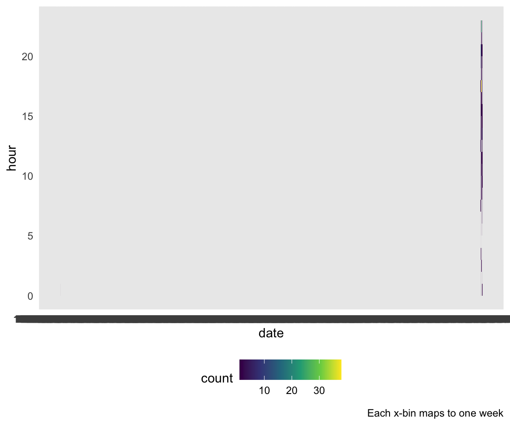
1.6.5 Anzahl der Visits nach Datum (Wochen) und Uhrzeit (bin2d)
time2 |>
ggplot(aes(x = date, y = hour)) +
geom_bin2d(binwidth = c(7, 1)) + # 1 week, 1 hour
scale_x_date(date_breaks = "1 week", date_labels = "%W") +
theme(legend.position = "bottom") +
scale_fill_viridis_c() +
labs(x = "Week number in 2023/2024",
caption = "Each x-bin maps to one week")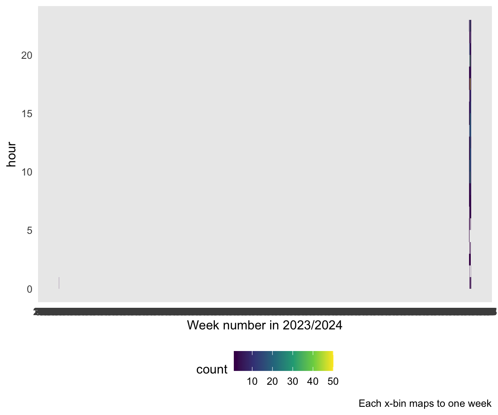
1.6.6 Anzahl der Visits nach Datum (Wochen) und Wochentag (bin2d)
time2 |>
ggplot(aes(x = date, y = dow)) +
geom_bin2d(binwidth = c(7, 1)) + # 1 week, 1 hour
scale_x_date(date_breaks = "1 week", date_labels = "%W") +
theme(legend.position = "bottom") +
scale_fill_viridis_c() +
labs(x = "Week number in 2023/2024",
caption = "Each x-bin maps to one week",
y = "Day of Week") +
scale_y_continuous(breaks = 1:7)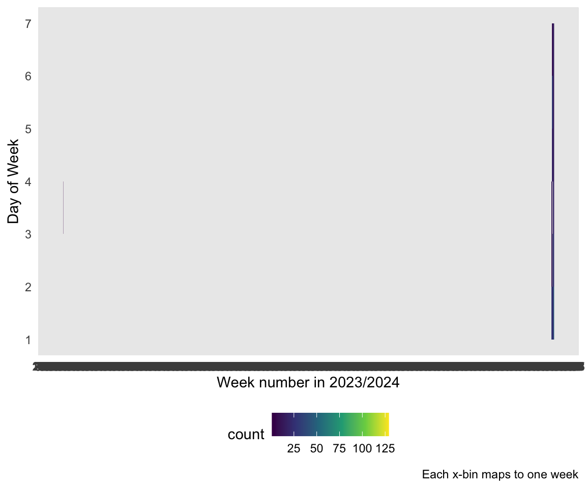
1.6.7 Interaktion mit dem LLM
1.6.8 LLM pro Visit
Gesucht wird nach Zeilen, in denen das Wort “llm” vorkommt.
1.6.8.1 Insgesamt
llm_per_visit |>
count(visit_uses_llm) |>
mutate(prop = n/sum(n))1.6.8.2 Pro Monat
llm_per_visit |>
mutate(month = month(min_time)) |>
group_by(month) |>
summarise(sum(visit_uses_llm))llm_per_visit |>
mutate(month = month(min_time)) |>
group_by(month) |>
summarise(n = sum(visit_uses_llm)) |>
ggplot(aes(x = month, y = n)) +
geom_col() +
scale_x_continuous(breaks = 1:6)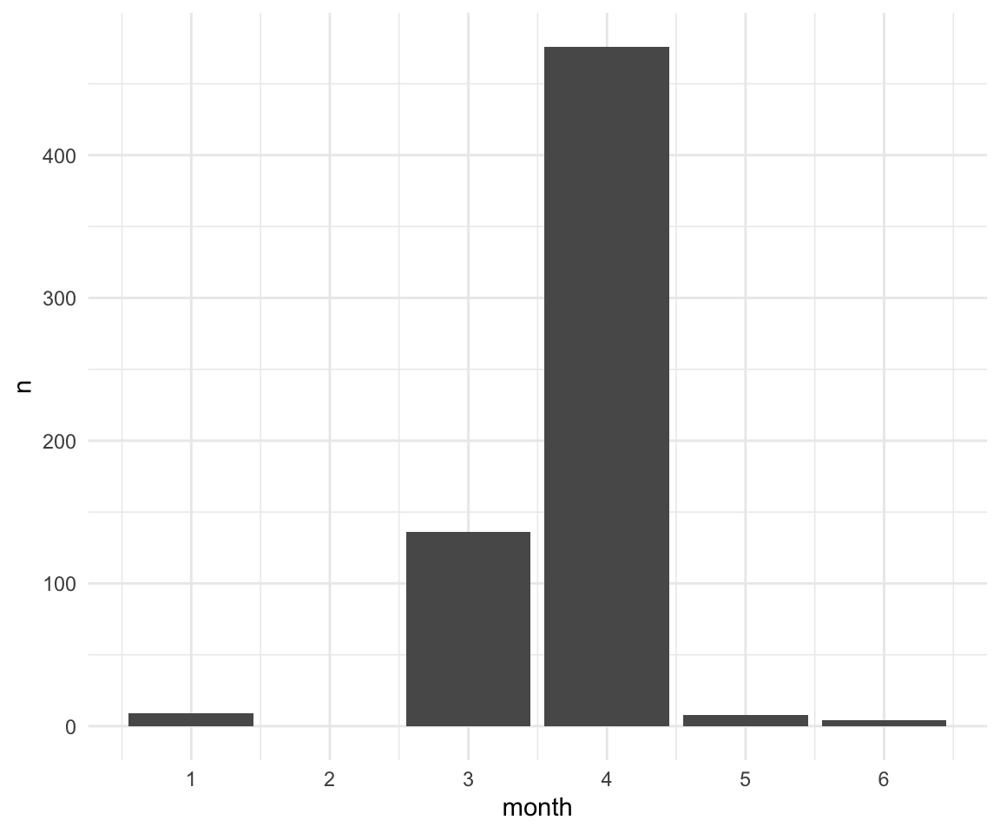
1.6.9 Wie oft wird (pro Monat) ein AI transcript angefordert?
1.6.9.1 Insgesamt
Es wurde sehr selten ein AI Transcript angefordert.
ai_transcript_clicks_per_month |>
count(clicks_transcript_any) |>
mutate(prop = n / sum(n))1.6.9.2 Pro Monat
ai_transcript_clicks_per_month |>
group_by(year_month) |>
summarise(prop = sum(clicks_transcript_any) / n()) ai_transcript_clicks_per_month |>
group_by(year_month) |>
summarise(prop = sum(clicks_transcript_any) / n()) |>
ggplot(aes(x = year_month, y = prop)) +
geom_col()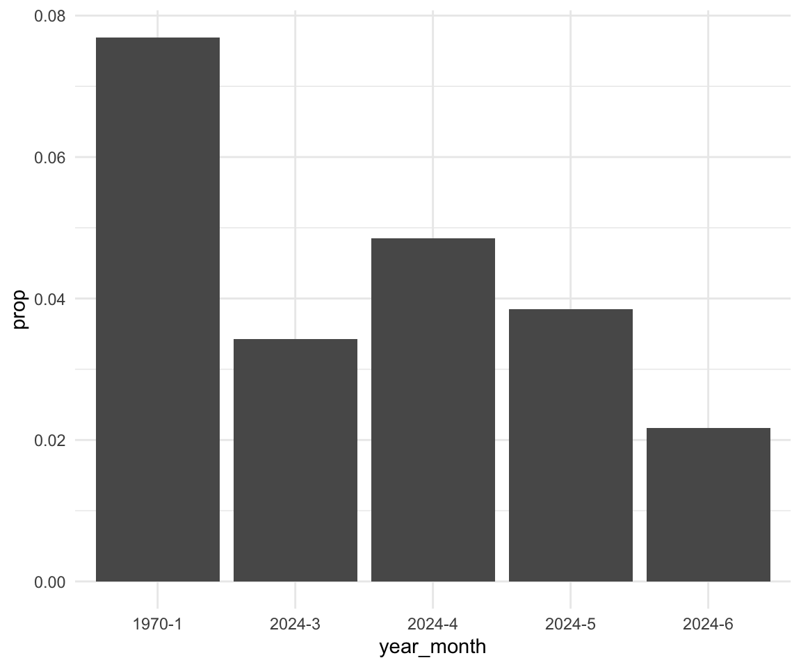
ai_transcript_clicks_per_month |>
group_by(year_month) |>
count(clicks_transcript_any) |>
ggplot(aes(x = year_month, y = n, fill = clicks_transcript_any)) +
geom_col(position = "dodge")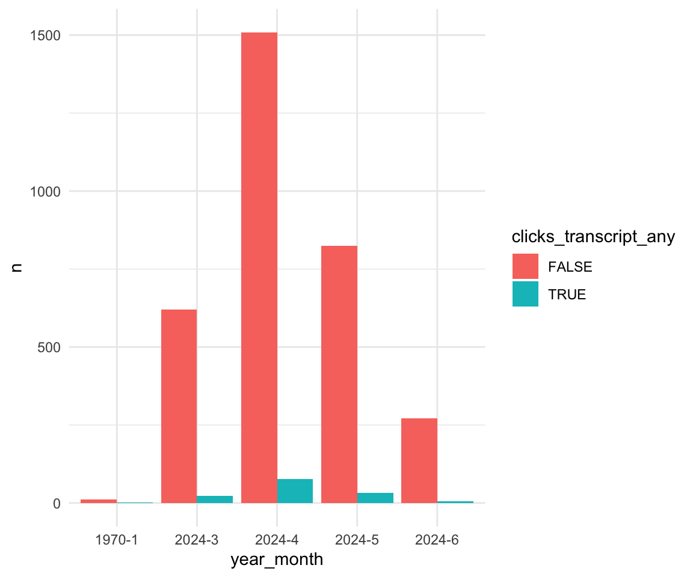
1.6.10 Wie oft wird (pro Monat) mit dem LLM interagiert?
1.6.10.1 Insgesamt
ai_llm_per_months |>
ungroup() |>
summarise(sum(n))ai_llm_per_months |>
ggplot(aes(x = year_month, y = n)) +
geom_col()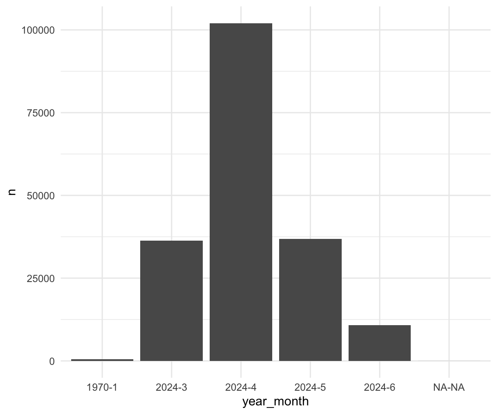
1.6.11 Welcher Anteil der Besucher (visitors) interagiert mit dem LLM?
1.6.11.1 Insgesamt
idvisit_has_llm |>
count(uses_llm) |>
mutate(prop = n / sum(n))idvisit_has_llm |>
ggplot(aes(x = uses_llm)) +
geom_bar()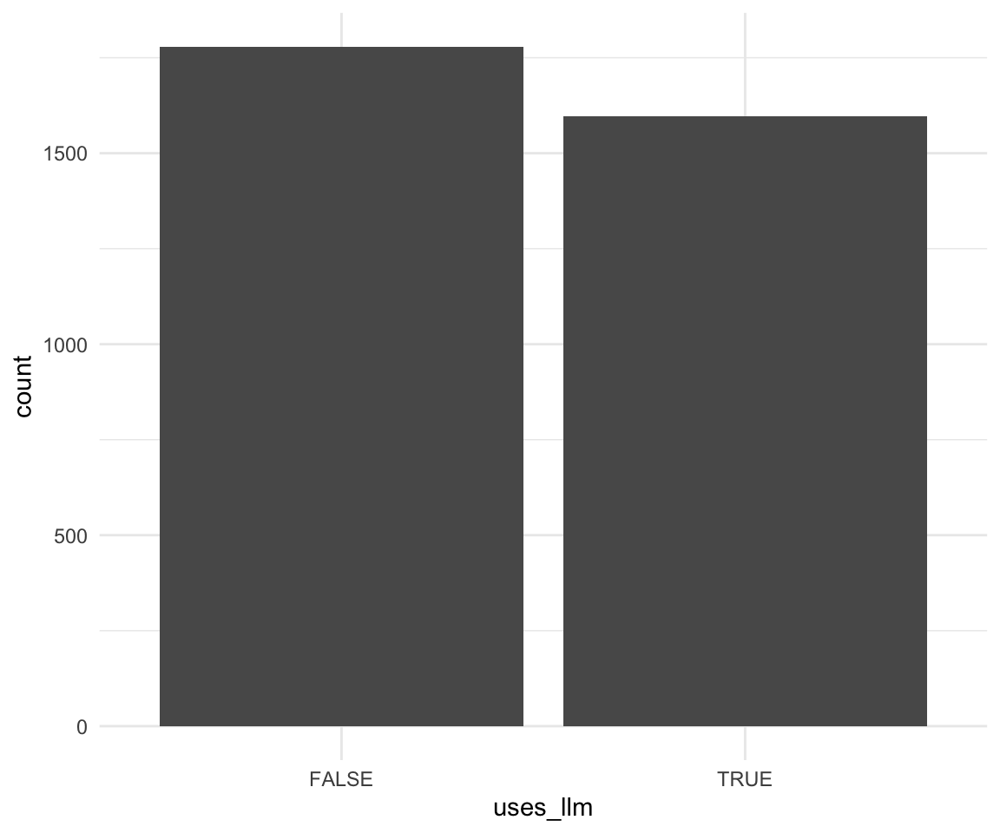
idvisit_has_llm |>
ggplot(aes(fill = uses_llm, x = 1)) +
geom_bar(position = "fill")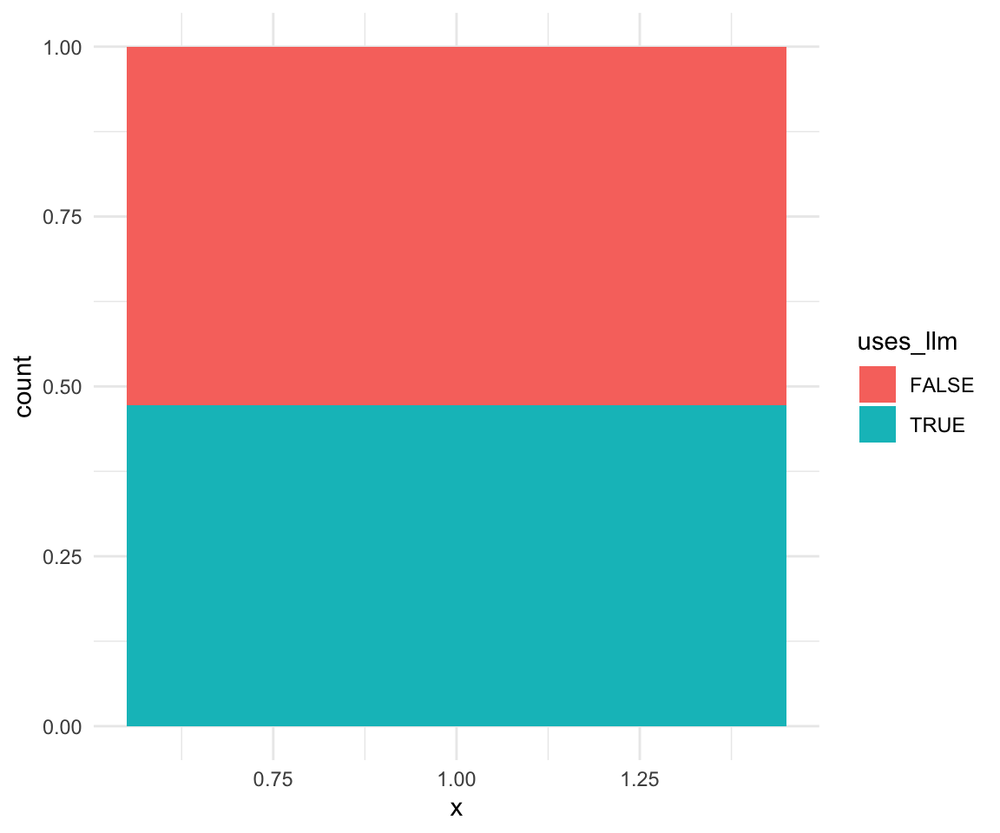
1.6.11.2 Pro Monat
idvisit_has_llm |>
group_by(year_month) |>
count(uses_llm)idvisit_has_llm |>
group_by(year_month) |>
count(uses_llm) |>
ggplot(aes(x = year_month, fill = uses_llm, y = n)) +
geom_col(position = "fill")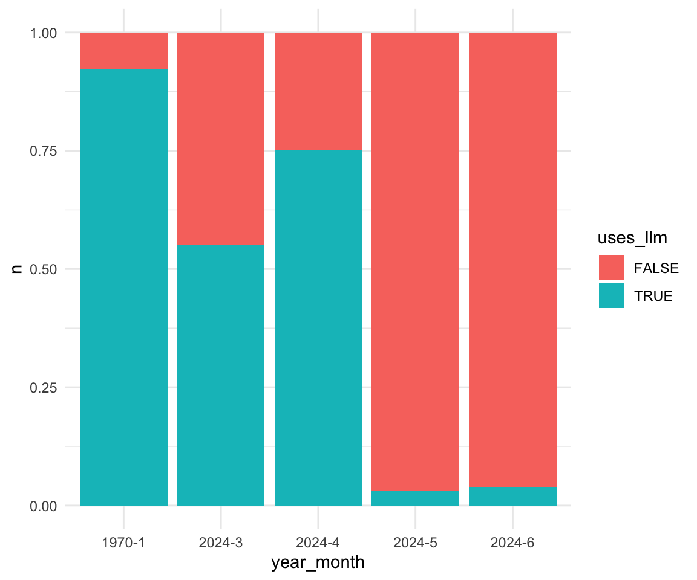
Wiederverwendung
MIT
Zitat
Mit BibTeX zitieren:
@online{untitled,
author = {},
langid = {de-DE}
}
Bitte zitieren Sie diese Arbeit als:
n.d.